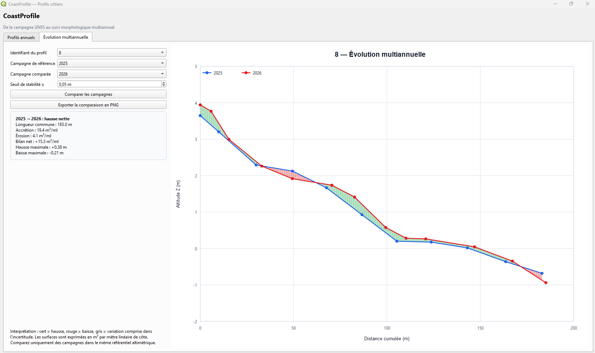

Architecture SIG & données
Modélisation PostgreSQL/PostGIS, gouvernance, contrôle qualité, requêtes spatiales et intégration de référentiels.
PostgreSQL · PostGIS · SQL · ETLGÉOMATIQUE · DATA ENGINEERING · SIG
Géomaticien et administrateur SIG, je conçois des applications web, des automatisations Python/PostGIS et des extensions QGIS qui rendent l’analyse spatiale directement exploitable par les métiers.
MON POSITIONNEMENT
Je couvre toute la chaîne : acquisition, qualité, stockage spatial, analyse, automatisation et diffusion métier.
Modélisation PostgreSQL/PostGIS, gouvernance, contrôle qualité, requêtes spatiales et intégration de référentiels.
PostgreSQL · PostGIS · SQL · ETLTraitements reproductibles, automatisation de chaînes métier et analyse vectorielle ou raster.
Python · GeoPandas · Shapely · PandasApplications web et extensions QGIS centrées sur l’usage, la décision et la traçabilité scientifique.
QGIS · React · Leaflet · StreamlitPROJETS SÉLECTIONNÉS
Chaque projet répond à un problème métier concret et démontre une compétence différente.
Une plateforme d’intelligence territoriale qui aide à choisir où implanter un équipement public. Elle combine accessibilité, population, vulnérabilité et équité spatiale pour comparer des scénarios transparents.

PLUGIN QGISUne extension QGIS conçue pour transformer des campagnes GNSS 3D en profils topographiques lisibles, puis suivre l’évolution des plages et dunes année après année.
Une application web géomatique qui transforme des positions datées du trait de côte en indicateurs de recul, d’avancée et de risque, visualisés par transect et par secteur.
Application publique SIG développée pour Pornic Agglomération afin de rendre l’information de collecte plus lisible et directement accessible aux habitants.
Une chaîne Python reproductible transforme les données territoriales en analyses de couverture et en cartes professionnelles prêtes à diffuser. La galerie présente directement les livrables produits, sans exposer le code.
Cliquez sur une carte pour l’examiner en plein écran.
DATA VISUALISATION
Deux expérimentations Python montrent ma capacité à transformer une succession de données en récit cartographique animé.
Animation de l’évolution des températures en France à partir de données météorologiques temporelles.
Animation spatio-temporelle du coucher du soleil, calculée selon la date et la position géographique.
EXPÉRIENCE
Administration d’un environnement SIG utilisé par plus de 400 personnes, PostgreSQL/PostGIS, droits d’accès, automatisations Python et développement d’applications métiers. Suivi littoral par campagnes GNSS et profils de plage/dune.
Administration de bases géographiques, développement de six applications web SIG, PCRS, diffusion cartographique et accompagnement des services métiers.
Cartographies analytiques, enquêtes géospatiales et conception de livrables interactifs au service du diagnostic et de l’attractivité territoriale.
Analyse des mobilités, cartographie commerciale et production d’outils d’aide à la décision territoriale.
Accompagnement progressif sur la gestion de données géographiques, les requêtes spatiales, l’administration de bases PostGIS et l’automatisation de traitements géomatiques en Python.
BOÎTE À OUTILS
Python · SQL · Pandas · GeoPandas · Shapely · ETL · Git
QGIS · PyQGIS · PostgreSQL · PostGIS · FME · GeoServer · GNSS
React · FastAPI · Streamlit · Leaflet · Folium · Plotly · Docker
CONTACT
Échangeons autour de vos besoins en géomatique, Data SIG, PostgreSQL/PostGIS ou développement Python.